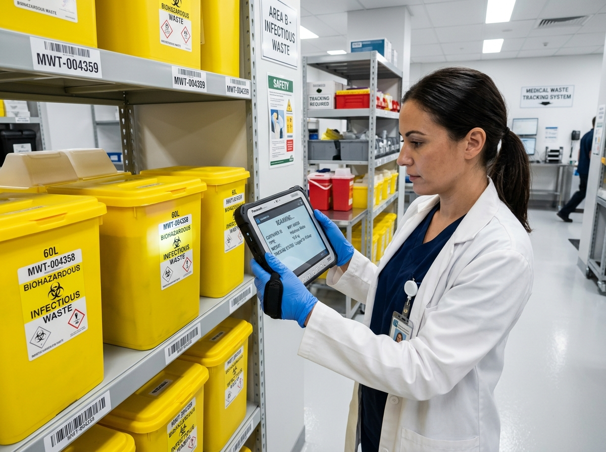
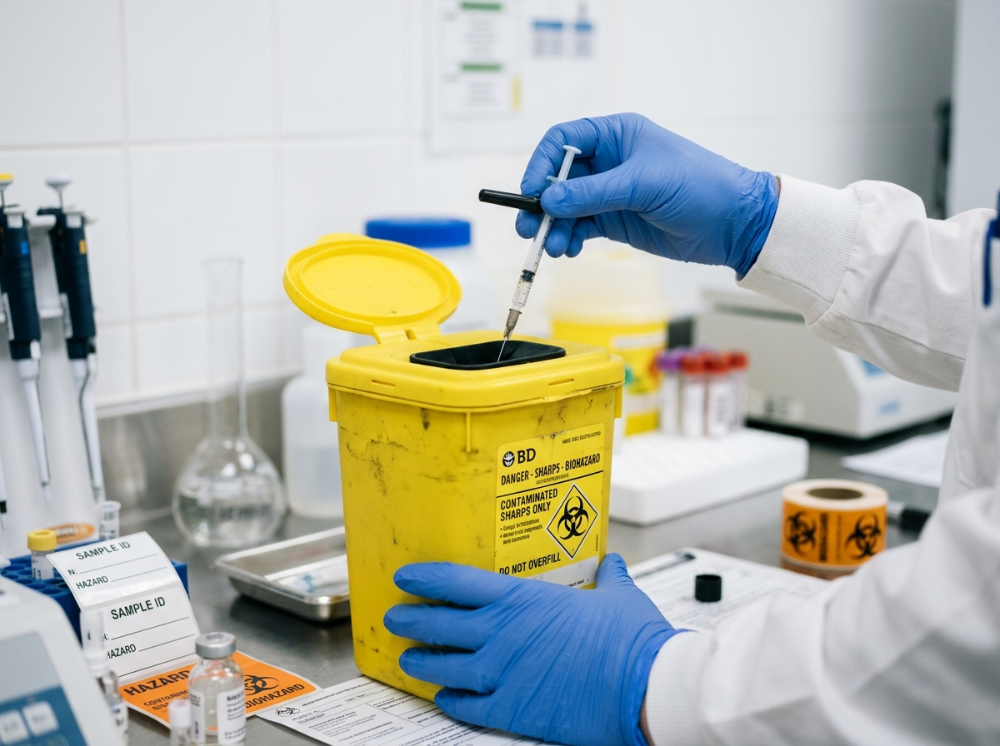
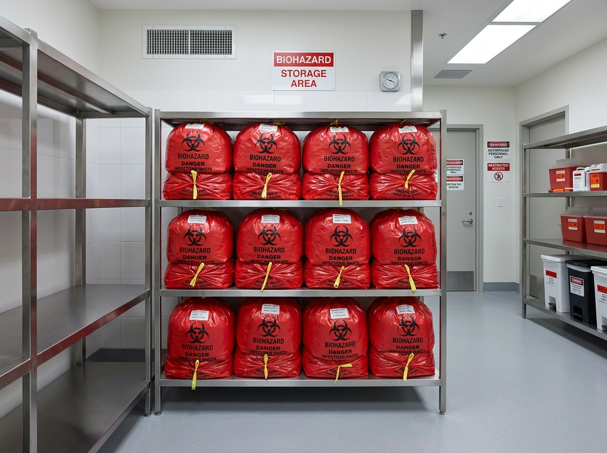

Protecting healthcare workers, communities, and the environment through certified medical waste collection, treatment, and disposal services that exceed regulatory standards.

All federal & state regulations
Sustainable disposal methods
From collection to certified destruction, we handle every category of regulated medical waste with precision and care.

Safe collection and destruction of needles, scalpels, lancets, and other sharp instruments with tamper-proof containers and certified handling protocols.
Learn More
Secure handling and incineration of infectious materials, blood-borne pathogen waste, and contaminated laboratory specimens under strict safety protocols.
Learn MoreCompliant disposal of expired, contaminated, or unused medications including controlled substances, chemotherapy drugs, and over-the-counter products.
Learn MoreWe combine industry expertise with cutting-edge technology to deliver waste disposal services that keep your facility compliant and your community safe.
We maintain compliance with EPA, OSHA, DOT, and state-specific regulations, providing you with complete documentation and audit-ready records for every pickup.
Scheduled and on-demand collection services with real-time GPS tracking for complete chain-of-custody visibility.
Every load receives a Certificate of Destruction, ensuring verified and documented disposal compliance.
Advanced autoclaving and treatment technologies that minimize environmental impact while maximizing safety.
Round-the-clock customer support with dedicated compliance consultants available for emergency pickups.
Access your client portal to schedule pickups, download compliance certificates, view waste volume analytics, and manage your billing — all from one intuitive dashboard.
A streamlined, fully-documented process from scheduling to certified destruction.
Book through our online portal or call our team. Choose recurring or on-demand service.
Our certified technicians arrive on schedule with proper containers and safety protocols.
Waste is treated through autoclaving, incineration, or chemical neutralization as required.
Receive your Certificate of Destruction and compliance reports via your dashboard.
See why thousands of healthcare facilities rely on SafeDispose for their medical waste management.
"SafeDispose transformed our waste management operations. Their compliance dashboard alone saved us 20 hours per month on documentation. Highly recommended for any healthcare facility."
"The reliability and professionalism of the SafeDispose team is unmatched. Zero compliance issues in three years. Their real-time tracking gives us complete peace of mind."
"As a laboratory dealing with hazardous materials daily, we needed a partner we could trust completely. SafeDispose exceeded our expectations with their pharmaceutical waste expertise."
We handle all categories of regulated medical waste including sharps (needles, scalpels), biohazardous waste (blood, tissues, contaminated materials), pharmaceutical waste (expired medications, chemotherapy drugs), and pathological waste. Our services cover everything from small clinics to large hospital networks.
Certificates of Destruction are automatically generated after each disposal cycle and uploaded to your client dashboard. You can download them anytime for audit purposes. We also send email notifications when new certificates are available.
Yes, SafeDispose maintains full compliance with EPA, OSHA, DOT, and all state-specific medical waste regulations. We are regularly audited and hold all necessary permits and licenses for medical waste transportation and disposal.
We offer flexible scheduling including daily, weekly, bi-weekly, and monthly pickups. On-demand emergency pickups are also available 24/7. You can manage your schedule through our online client portal or by calling our support team.
Yes, we provide all necessary waste containers, sharps boxes, biohazard bags, labels, and manifests as part of our service. Container sizes range from small desktop sharps containers to large 95-gallon rolling carts, all meeting DOT and OSHA specifications.